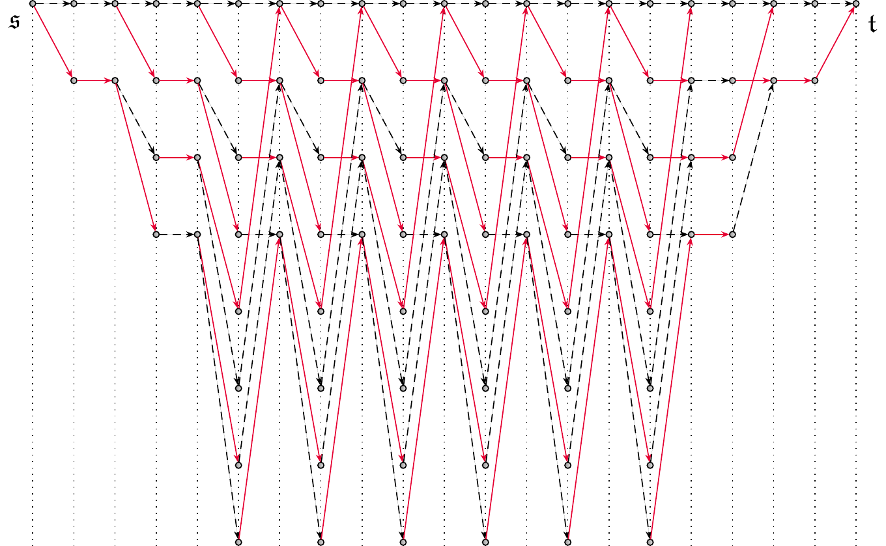
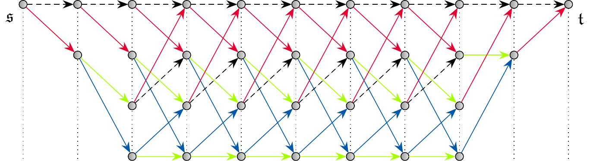

CECCO: Convolutional Codes
CECCO supports convolutional codes in their two block code incarnations: zero-terminated and tailbitten. Both are treated as linear codes with special structure, similarly as the polynomial and cyclic codes in the corresponding demo. A convolutional code is defined by a kcc × ncc generator matrix Gcc(x) over the polynomial ring F[x] (we write x for the customary delay variable D because CECCO prints polynomials in x) with memory u, the largest degree among its entries. F can be any finite field, cf. the demos on prime fields and extension fields.
The encoder processes L blocks of kcc
information symbols each. Zero termination appends u zero-blocks
that drive the encoder back to the all-zero state, giving linear
code C[F; (L+u)ncc, Lkcc]. Tailbiting wraps
the encoder output around modulo xL−1, giving a linear
code C[F; Lncc, Lkcc] without any rate loss.
Since ConvolutionalCode is derived from
LinearCode, everything from the demo on
linear
codes and their decoding and the demo on soft decoding
(minimum distance, weight enumerator, duals, hard- and soft-input
decoders) is immediately available. Note that streaming
(continuous, unterminated) encoding and decoding of convolutional
codes is currently not supported by CECCO.
Binary convolutional encoders are traditionally
specified in octal notation, for example the ubiquitous (5, 7)
encoder with memory 2 or the (133, 171) encoder with memory 6.
CECCO accepts this notation directly: a dedicated
ConvolutionalCode constructor takes the octal values
(typed verbatim, exploiting that C++ allows octal integer literals
(leading 0)) and converts them to generator polynomials. The u+1
binary digits of each value are read MSB-first, the leading digit
being the x0 tap. No explicit memory parameter is
needed: the width of each row of Gcc(x) is derived as
the bit width of the row's largest entry, which is exact because
tabulated encoders are row-wise delay-free (no row is divisible by
x).
Here we zero-terminate the (5, 7) encoder after L =
8 information blocks and obtain C[F2; 20, 8]. Its minimal trellis
(cf. the linear
codes demo) is the classic convolutional trellis, sectionalized
at symbol level (one segment per code symbol, the format consumed
by the trellis-based decoders): at block boundaries it has the
familiar qu = 4 states, but between the two symbols of
an output block the current information bit has already influenced
the first symbol and is still needed for the second — it is part of
the state, giving up to qu+kcc = 8 states
there. The state complexity reported below is the maximum over all
layers, hence 8. The trellis can be exported for inspection with
the export_as_tikz member of the Trellis
class template, and merge_segments recombines the two
symbol-level segments of each output block into one, recovering the
conventional time-step trellis. Since ncc = 2 and the
code is binary, its edge labels live in F4.
// classic rate-1/2 encoder (5, 7) with memory 2, given in octal notation
auto C = ConvolutionalCode<F2>({05, 07}, 8, termination_t::zero_terminated);
std::cout << showall << C << std::endl;
const auto& T1 = C.get_minimal_trellis();
std::cout << "Trellis state complexity: " << T1.get_maximum_depth() << std::endl;
T1.export_as_tikz("trellis1.tikz");
auto T2 = T1.merge_segments<F4>();
T2.export_as_tikz("trellis2.tikz");
[F_2; 20, 8], dmin = 5
Linear code with properties: {
G =
⌈1 1 0 1 1 1 0 0 0 0 0 0 0 0 0 0 0 0 0 0⌉
|0 0 1 1 0 1 1 1 0 0 0 0 0 0 0 0 0 0 0 0|
|0 0 0 0 1 1 0 1 1 1 0 0 0 0 0 0 0 0 0 0|
|0 0 0 0 0 0 1 1 0 1 1 1 0 0 0 0 0 0 0 0|
|0 0 0 0 0 0 0 0 1 1 0 1 1 1 0 0 0 0 0 0|
|0 0 0 0 0 0 0 0 0 0 1 1 0 1 1 1 0 0 0 0|
|0 0 0 0 0 0 0 0 0 0 0 0 1 1 0 1 1 1 0 0|
⌊0 0 0 0 0 0 0 0 0 0 0 0 0 0 1 1 0 1 1 1⌋
H =
⌈1 0 0 0 0 1 0 1 0 0 0 1 0 1 0 0 0 1 0 1⌉
|0 1 0 0 0 1 0 1 0 0 0 1 0 1 0 0 0 1 0 1|
|0 0 1 0 0 0 0 1 0 1 0 0 0 1 0 1 0 0 0 1|
|0 0 0 1 0 1 0 0 0 1 0 1 0 0 0 1 0 1 0 0|
|0 0 0 0 1 1 0 1 0 1 0 0 0 1 0 1 0 0 0 1|
|0 0 0 0 0 0 1 1 0 1 0 1 0 0 0 1 0 1 0 0|
|0 0 0 0 0 0 0 0 1 1 0 1 0 1 0 0 0 1 0 1|
|0 0 0 0 0 0 0 0 0 0 1 1 0 1 0 1 0 0 0 1|
|0 0 0 0 0 0 0 0 0 0 0 0 1 1 0 1 0 1 0 0|
|0 0 0 0 0 0 0 0 0 0 0 0 0 0 1 1 0 1 0 1|
|0 0 0 0 0 0 0 0 0 0 0 0 0 0 0 0 1 1 0 1|
⌊0 0 0 0 0 0 0 0 0 0 0 0 0 0 0 0 0 0 1 1⌋
A(x) = 1 + 8x^5 + 13x^6 + 20x^7 + 28x^8 + 32x^9 + 38x^10 + 40x^11 + 40x^12 + 24x^13 + 5x^14 + 4x^15 + 3x^16
tmax = 2
}
Convolutional code with properties: { k_cc = 1, n_cc = 2, L = 8, u = 2, zero-terminated,
G_cc = [[1 + x^2, 1 + x + x^2]] }
Trellis state complexity: 8
The code reports its convolutional parameters
kcc, ncc, L, u, the termination, and the
generator matrix Gcc(x) in addition to the usual linear
code properties. As everywhere in CECCO, the IO manipulators
showbasic, showmost, and
showall select how much of this information is
printed. The reported minimum distance equals the widely known free
distance 5 of the (5, 7) encoder: the zero-terminated codewords are
exactly the state-sequence paths of the encoder that start and end
in the all-zero state, and the lowest-weight such path realizes the
free distance already for small L. The exported symbol-level
minimal trellis renders as follows:

The merged trellis has one segment per output block and at most qu = 4 states. Each branch carries one F4 symbol standing for the two output bits of the block; the edge colors encode these labels: black = 00, red = 11, green = 01, blue = 10. Trellis-based decoding in CECCO is based on the symbol-level minimal trellis and not the merged one.

Sweeping over L shows the characteristic behavior of the two terminations. Zero termination pays for the state flush with rate: R = L/(2(L+u)) approaches the encoder rate 1/2 only asymptotically, while dmin stays pinned at the free distance:
for (size_t L : {2, 4, 8, 16}) {
auto CL = ConvolutionalCode<F2>({05, 07}, L, termination_t::zero_terminated);
std::cout << "zero-terminated, L = " << std::setw(2) << L << ": [" << CL.get_n() << ", " << CL.get_k()
<< "], R = " << static_cast<double>(CL.get_k()) / CL.get_n() << ", dmin = " << CL.get_dmin()
<< std::endl;
}
zero-terminated, L = 2: [8, 2], R = 0.25, dmin = 5
zero-terminated, L = 4: [12, 4], R = 0.333333, dmin = 5
zero-terminated, L = 8: [20, 8], R = 0.4, dmin = 5
zero-terminated, L = 16: [36, 16], R = 0.444444, dmin = 5
Tailbiting maintains R = 1/2 exactly for every L. The price is paid at short lengths: codewords that wrap around the circular trellis can have lower weight than any terminated path, so dmin falls below the free distance for small L and recovers it as L grows:
for (size_t L : {3, 4, 8, 16}) {
auto CL = ConvolutionalCode<F2>({05, 07}, L, termination_t::tailbitten);
std::cout << "tailbitten, L = " << std::setw(2) << L << ": [" << CL.get_n() << ", " << CL.get_k()
<< "], R = " << static_cast<double>(CL.get_k()) / CL.get_n() << ", dmin = " << CL.get_dmin()
<< std::endl;
}
tailbitten, L = 3: [6, 3], R = 0.5, dmin = 2
tailbitten, L = 4: [8, 4], R = 0.5, dmin = 2
tailbitten, L = 8: [16, 8], R = 0.5, dmin = 4
tailbitten, L = 16: [32, 16], R = 0.5, dmin = 5
Encoding and decoding work exactly as for any other linear code. Due to the bounded state complexity of convolutional codes, Viterbi decoding on the minimal trellis is the natural choice for convolutional codes. It performs per-codeword ML decoding. First with hard input from a binary symmetric channel:
{
// TX
auto u = Vector<F2>(C.get_k()).randomize();
std::cout << "Random message: " << u << std::endl;
auto c = C.enc(u);
const double pe = 0.05;
BSC channel(pe);
// RX
auto r = channel(c);
auto c_est = C.dec_Viterbi(r);
auto u_est = C.encinv(c_est);
std::cout << "Hard-input Viterbi message estimate: " << u_est << std::endl;
}
Random message: ( 0, 0, 1, 0, 1, 0, 1, 0 )
Hard-input Viterbi message estimate: ( 0, 0, 1, 0, 1, 0, 1, 0 )
Soft-input decoding works just as well, along the
lines of the demo on soft
decoding: the codeword is BPSK-transmitted over a BI-AWGN
channel and the LLRCalculator converts the noisy
observations into the LLRs consumed by
dec_Viterbi_soft (for the binary code here, one LLR
per code symbol; class template argument deduction gives exactly
the binary calculator we need). The same transmission can
alternatively be written as an operator>>-based
simulation chain built from the Enc, Dec,
and Encinv blocks, where the decoder block can be
switched to any other supported method (like
method_t::BCJR or method_t::BP) without
touching the rest of the chain:
{
// TX
auto u = Vector<F2>(C.get_k()).randomize();
std::cout << "Random message: " << u << std::endl;
BI_AWGN channel(2.0); // BPSK at Eb/N0 = 2 dB
LLRCalculator llrcalculator(channel);
// RX
auto llrs = llrcalculator(channel(C.enc(u)));
auto c_est = C.dec_Viterbi_soft(llrs);
auto u_est = C.encinv(c_est);
std::cout << "Soft-input Viterbi message estimate: " << u_est << std::endl;
// alternative realization: simulation chain
Enc enc(C);
Dec dec(C, method_t::Viterbi_soft);
Encinv encinv(C);
Vector<F2> u_hat;
u >> enc >> channel >> llrcalculator >> dec >> encinv >> u_hat;
std::cout << "Simulation chain message estimate: " << u_hat << std::endl;
}
Random message: ( 0, 1, 1, 0, 0, 1, 1, 1 )
Soft-input Viterbi message estimate: ( 0, 1, 1, 0, 0, 1, 1, 1 )
Simulation chain message estimate: ( 0, 1, 1, 0, 0, 1, 1, 1 )
Not every encoder can be tailbitten with every L. An encoder of full rank over F loses rank under tailbiting exactly when its rows share polynomial factors with xL−1; the resulting block-circulant generator matrix then has rank smaller than Lkcc and the constructor throws. The polynomials of the encoder (6, 5), i.e., (1+x, (1+x)2), share the factor 1+x, which divides xL−1 for every L in characteristic 2, so tailbiting fails regardless of L (zero termination of the same encoder works, although it is catastrophic):
// 1 + x and 1 + x^2 = (1 + x)^2 share the factor 1 + x, which divides x^L - 1 for every L
try {
auto C = ConvolutionalCode<F2>({06, 05}, 8, termination_t::tailbitten);
} catch (const std::invalid_argument& e) {
std::cout << e.what() << std::endl;
}
Cannot construct convolutional code: tailbiting rank loss, the block-circulant generator matrix
has rank smaller than L * k_cc
The octal constructor covers any kcc and
ncc. For kcc > 1 the rows of
Gcc(x) are given as nested braces. Per-row width
derivation correctly identifies row degree 1 for the first row (2,
1, 3) (in polynomial form: (1, x, 1+x)), while it identifies row
degree 2 for the second row (1, 4, 7) (in polynomial form:
(x2, 1, 1+x+x2)). This implies memory 2 for
the overall code. We print with showmost, which shows
the recovered Gcc(x) without the (here uninteresting)
weight enumerator details:
// k_cc = 2, n_cc = 3 encoder with row degrees 1 and 2: row widths are derived from the
// largest entry per row, so (2, 1, 3) reads as (1, x, 1 + x) and (1, 4, 7) as
// (x^2, 1, 1 + x + x^2)
{
auto C = ConvolutionalCode<F2>({{2, 1, 3}, {1, 4, 7}}, 6, termination_t::zero_terminated);
std::cout << showmost << C << std::endl;
}
[F_2; 24, 12]
Linear code with properties: {
G =
⌈1 0 1 0 1 1 0 0 0 0 0 0 0 0 0 0 0 0 0 0 0 0 0 0⌉
|0 1 1 0 0 1 1 0 1 0 0 0 0 0 0 0 0 0 0 0 0 0 0 0|
|0 0 0 1 0 1 0 1 1 0 0 0 0 0 0 0 0 0 0 0 0 0 0 0|
|0 0 0 0 1 1 0 0 1 1 0 1 0 0 0 0 0 0 0 0 0 0 0 0|
|0 0 0 0 0 0 1 0 1 0 1 1 0 0 0 0 0 0 0 0 0 0 0 0|
|0 0 0 0 0 0 0 1 1 0 0 1 1 0 1 0 0 0 0 0 0 0 0 0|
|0 0 0 0 0 0 0 0 0 1 0 1 0 1 1 0 0 0 0 0 0 0 0 0|
|0 0 0 0 0 0 0 0 0 0 1 1 0 0 1 1 0 1 0 0 0 0 0 0|
|0 0 0 0 0 0 0 0 0 0 0 0 1 0 1 0 1 1 0 0 0 0 0 0|
|0 0 0 0 0 0 0 0 0 0 0 0 0 1 1 0 0 1 1 0 1 0 0 0|
|0 0 0 0 0 0 0 0 0 0 0 0 0 0 0 1 0 1 0 1 1 0 0 0|
⌊0 0 0 0 0 0 0 0 0 0 0 0 0 0 0 0 1 1 0 0 1 1 0 1⌋
H =
⌈1 0 0 0 0 1 0 0 1 0 1 0 0 1 1 0 1 0 0 0 0 0 0 1⌉
|0 1 0 0 0 0 0 1 1 0 0 1 0 0 1 0 1 0 0 1 1 0 0 0|
|0 0 1 0 0 1 0 1 0 0 1 1 0 1 0 0 0 0 0 1 1 0 0 1|
|0 0 0 1 0 0 0 1 0 0 0 0 0 1 1 0 0 1 0 0 1 0 0 0|
|0 0 0 0 1 1 0 0 1 0 0 1 0 1 0 0 1 1 0 1 0 0 0 0|
|0 0 0 0 0 0 1 1 1 0 1 1 0 0 1 0 0 1 0 1 0 0 0 1|
|0 0 0 0 0 0 0 0 0 1 1 1 0 1 1 0 0 1 0 0 1 0 0 0|
|0 0 0 0 0 0 0 0 0 0 0 0 1 1 1 0 1 1 0 0 1 0 0 1|
|0 0 0 0 0 0 0 0 0 0 0 0 0 0 0 1 1 1 0 1 1 0 0 1|
|0 0 0 0 0 0 0 0 0 0 0 0 0 0 0 0 0 0 1 1 1 0 0 1|
|0 0 0 0 0 0 0 0 0 0 0 0 0 0 0 0 0 0 0 0 0 1 0 1|
⌊0 0 0 0 0 0 0 0 0 0 0 0 0 0 0 0 0 0 0 0 0 0 1 0⌋
}
Convolutional code with properties: { k_cc = 2, n_cc = 3, L = 6, u = 2, zero-terminated,
G_cc = [[1, x, 1 + x], [x^2, 1, 1 + x + x^2]] }
Octal notation for generator polynomials is inherently binary; over other fields the generator matrix is specified directly as a matrix of polynomials. The following rate-2/3 systematic encoder with memory 1 over F4 (constructed as in the demo on finite extension fields) is shown with both terminations; note that the tailbitten code is reported as quasi-cyclic with shift index dividing ncc = 3 as a tailbitten convolutional code is by construction invariant under rotation by one block of ncc symbols:
{
// rate-2/3 systematic encoder with memory 1 over F4
const auto zero = Polynomial<F4>(0);
const auto one = Polynomial<F4>(1);
const auto G_cc =
Matrix<Polynomial<F4>>({{one, zero, Polynomial<F4>({1, 2})}, {zero, one, Polynomial<F4>({2, 1})}});
auto Czt = ConvolutionalCode<F4>(G_cc, 4, termination_t::zero_terminated);
std::cout << showall << Czt << std::endl;
auto Ctb = ConvolutionalCode<F4>(G_cc, 4, termination_t::tailbitten);
std::cout << showall << Ctb << std::endl;
}
[F_4; 15, 8], dmin = 3
Linear code with properties: {
G =
⌈1 0 1 0 0 2 0 0 0 0 0 0 0 0 0⌉
|0 1 2 0 0 1 0 0 0 0 0 0 0 0 0|
|0 0 0 1 0 1 0 0 2 0 0 0 0 0 0|
|0 0 0 0 1 2 0 0 1 0 0 0 0 0 0|
|0 0 0 0 0 0 1 0 1 0 0 2 0 0 0|
|0 0 0 0 0 0 0 1 2 0 0 1 0 0 0|
|0 0 0 0 0 0 0 0 0 1 0 1 0 0 2|
⌊0 0 0 0 0 0 0 0 0 0 1 2 0 0 1⌋
H =
⌈1 0 3 0 1 1 0 3 3 0 2 2 0 0 1⌉
|0 1 1 0 3 3 0 2 2 0 1 1 0 0 3|
|0 0 0 1 3 0 0 3 3 0 2 2 0 0 1|
|0 0 0 0 0 0 1 3 0 0 3 3 0 0 2|
|0 0 0 0 0 0 0 0 0 1 3 0 0 0 3|
|0 0 0 0 0 0 0 0 0 0 0 0 1 0 0|
⌊0 0 0 0 0 0 0 0 0 0 0 0 0 1 0⌋
A(x) = 1 + 48x^3 + 93x^4 + 324x^5 + 1404x^6 + 3396x^7 + 7887x^8 + 13692x^9 + 16308x^10 + 14460x^11 + 6819x^12 + 1104x^13 tmax = 1
}
Convolutional code with properties: { k_cc = 2, n_cc = 3, L = 4, u = 1, zero-terminated,
G_cc = [[1, 0, 1 + 2x], [0, 1, 2 + x]] }
[F_4; 12, 8], dmin = 3
Linear code with properties: {
G =
⌈1 0 1 0 0 2 0 0 0 0 0 0⌉
|0 1 2 0 0 1 0 0 0 0 0 0|
|0 0 0 1 0 1 0 0 2 0 0 0|
|0 0 0 0 1 2 0 0 1 0 0 0|
|0 0 0 0 0 0 1 0 1 0 0 2|
|0 0 0 0 0 0 0 1 2 0 0 1|
|0 0 2 0 0 0 0 0 0 1 0 1|
⌊0 0 1 0 0 0 0 0 0 0 1 2⌋
H =
⌈1 0 3 0 1 1 0 3 3 3 0 2⌉
|0 1 1 0 3 3 0 2 2 3 3 1|
|0 0 0 1 3 0 0 3 3 2 3 2|
⌊0 0 0 0 0 0 1 3 0 3 1 3⌋
A(x) = 1 + 48x^3 + 138x^4 + 648x^5 + 2772x^6 + 6648x^7 + 13017x^8 + 16632x^9 + 15012x^10 + 8664x^11 + 1956x^12 tmax = 1 quasi-cyclic(ell = 3)
}
Convolutional code with properties: { k_cc = 2, n_cc = 3, L = 4, u = 1, tailbitten,
G_cc = [[1, 0, 1 + 2x], [0, 1, 2 + x]] }
CECCO can also go the other way. The
ConvolutionalCode constructor taking a plain
LinearCode performs complete recognition: it decides
whether the code admits a zero-terminated or tailbitten
convolutional representation at all and, if so, recovers the
canonical one with minimal kcc, then minimal
ncc, then minimal memory u, zero-terminated preferred
over tailbitten on ties. A code with no such representation is
rejected with an exception. For the round trip test we hide the
structure of two convolutional codes behind a random change of
basis (the row space, hence the code, is unchanged) and recognize
the resulting anonymous LinearCode as a
ConvolutionalCode:
const auto roundtrip_test = [](const ConvolutionalCode<F2>& CC) {
const size_t k = CC.get_k();
auto S = ZeroMatrix<F2>(k, k);
do {
S.randomize();
} while (S.rank() < k);
auto C_obscured = LinearCode(CC.get_n(), k, S * CC.get_G()); // structure hidden by change of basis
auto C_recognized = ConvolutionalCode<F2>(C_obscured); // ... and recovered by recognition
assert(C_recognized == CC);
std::cout << showmost << C_recognized << std::endl;
};
roundtrip_test(ConvolutionalCode<F2>({05, 07}, 8, termination_t::zero_terminated));
roundtrip_test(ConvolutionalCode<F2>({05, 07}, 8, termination_t::tailbitten));
[F_2; 20, 8]
Linear code with properties: {
G =
⌈1 1 0 1 1 1 0 0 0 0 0 0 0 0 0 0 0 0 0 0⌉
|0 0 1 1 0 1 1 1 0 0 0 0 0 0 0 0 0 0 0 0|
|0 0 0 0 1 1 0 1 1 1 0 0 0 0 0 0 0 0 0 0|
|0 0 0 0 0 0 1 1 0 1 1 1 0 0 0 0 0 0 0 0|
|0 0 0 0 0 0 0 0 1 1 0 1 1 1 0 0 0 0 0 0|
|0 0 0 0 0 0 0 0 0 0 1 1 0 1 1 1 0 0 0 0|
|0 0 0 0 0 0 0 0 0 0 0 0 1 1 0 1 1 1 0 0|
⌊0 0 0 0 0 0 0 0 0 0 0 0 0 0 1 1 0 1 1 1⌋
H =
⌈1 0 0 0 0 1 0 1 0 0 0 1 0 1 0 0 0 1 0 1⌉
|0 1 0 0 0 1 0 1 0 0 0 1 0 1 0 0 0 1 0 1|
|0 0 1 0 0 0 0 1 0 1 0 0 0 1 0 1 0 0 0 1|
|0 0 0 1 0 1 0 0 0 1 0 1 0 0 0 1 0 1 0 0|
|0 0 0 0 1 1 0 1 0 1 0 0 0 1 0 1 0 0 0 1|
|0 0 0 0 0 0 1 1 0 1 0 1 0 0 0 1 0 1 0 0|
|0 0 0 0 0 0 0 0 1 1 0 1 0 1 0 0 0 1 0 1|
|0 0 0 0 0 0 0 0 0 0 1 1 0 1 0 1 0 0 0 1|
|0 0 0 0 0 0 0 0 0 0 0 0 1 1 0 1 0 1 0 0|
|0 0 0 0 0 0 0 0 0 0 0 0 0 0 1 1 0 1 0 1|
|0 0 0 0 0 0 0 0 0 0 0 0 0 0 0 0 1 1 0 1|
⌊0 0 0 0 0 0 0 0 0 0 0 0 0 0 0 0 0 0 1 1⌋
}
Convolutional code with properties: { k_cc = 1, n_cc = 2, L = 8, u = 2, zero-terminated,
G_cc = [[1 + x^2, 1 + x + x^2]] }
[F_2; 16, 8]
Linear code with properties: {
G =
⌈1 1 0 1 1 1 0 0 0 0 0 0 0 0 0 0⌉
|0 0 1 1 0 1 1 1 0 0 0 0 0 0 0 0|
|0 0 0 0 1 1 0 1 1 1 0 0 0 0 0 0|
|0 0 0 0 0 0 1 1 0 1 1 1 0 0 0 0|
|0 0 0 0 0 0 0 0 1 1 0 1 1 1 0 0|
|0 0 0 0 0 0 0 0 0 0 1 1 0 1 1 1|
|1 1 0 0 0 0 0 0 0 0 0 0 1 1 0 1|
⌊0 1 1 1 0 0 0 0 0 0 0 0 0 0 1 1⌋
H =
⌈1 0 0 0 0 1 0 1 0 0 0 1 0 1 0 0⌉
|0 1 0 0 0 1 0 1 0 0 0 1 1 0 1 0|
|0 0 1 0 0 0 0 1 0 1 0 0 0 1 0 1|
|0 0 0 1 0 1 0 0 0 1 0 1 0 0 1 0|
|0 0 0 0 1 1 0 1 0 1 0 0 1 0 1 1|
|0 0 0 0 0 0 1 1 0 1 0 1 1 1 0 0|
|0 0 0 0 0 0 0 0 1 1 0 1 0 1 1 1|
⌊0 0 0 0 0 0 0 0 0 0 1 1 1 0 1 1⌋
}
Convolutional code with properties: { k_cc = 1, n_cc = 2, L = 8, u = 2, tailbitten,
G_cc = [[1 + x^2, 1 + x + x^2]] }
The recognized parameters and generator matrices coincide with the ones we started from, for the zero-terminated as well as the tailbitten code. The recognition constructor also makes a structural fact visible: polynomial codes as in the demo on polynomial and cyclic codes are precisely the zero-terminated convolutional codes with kcc = ncc = 1 and with the convolutional code generator polynomials determining the polynomial code generator polynomial gamma. Recognizing the cyclic binary [7, 4] Hamming code accordingly returns u = 3 and Gcc = (1 + x + x3), its generator polynomial gamma:
{
auto HamC = HammingCode<F2>(LinearCode<F2>(4, Polynomial<F2>({F2(1), F2(1), F2(0), F2(1)})));
std::cout << showall << HamC << std::endl;
auto CC = ConvolutionalCode<F2>(HamC);
assert(CC == HamC && CC.is_zero_terminated());
std::cout << showall << CC << std::endl;
}
[F_2; 7, 4], dmin = 3
Linear code with properties: {
[F_2; 7, 4], dmin = 3
Linear code with properties: {
G =
⌈1 1 0 1 0 0 0⌉
|0 1 1 0 1 0 0|
|0 0 1 1 0 1 0|
⌊0 0 0 1 1 0 1⌋
H =
⌈1 0 0 1 0 1 1⌉
|0 1 0 1 1 1 0|
⌊0 0 1 0 1 1 1⌋
A(x) = 1 + 7x^3 + 7x^4 + x^7 tmax = 1 polynomial(cyclic, gamma = 1 + x + x^3)
perfect dual-containing
}
Hamming code with properties: { s = 3 }
[F_2; 7, 4], dmin = 3
Linear code with properties: {
G =
⌈1 1 0 1 0 0 0⌉
|0 1 1 0 1 0 0|
|0 0 1 1 0 1 0|
⌊0 0 0 1 1 0 1⌋
H =
⌈1 0 0 1 0 1 1⌉
|0 1 0 1 1 1 0|
⌊0 0 1 0 1 1 1⌋
A(x) = 1 + 7x^3 + 7x^4 + x^7 tmax = 1 polynomial(cyclic, gamma = 1 + x + x^3)
perfect dual-containing
}
Convolutional code with properties: { k_cc = 1, n_cc = 1, L = 4, u = 3, zero-terminated,
G_cc = [[1 + x + x^3]] }
Finally, we build an expurgated tailbiting code. The idea: take a tailbitten convolutional code and expurgate it down to the subcode of codewords whose message polynomial is divisible by a polynomial p(x) of degree c. In literature, this p(x) is sometimes called an expurgating linear function (ELF). The literature often says “CRC” here, but since the polynomial code is in general not cyclic, we avoid that term. In CECCO's terminology the admissible message polynomials form the codewords of a polynomial code (that may or may not be cyclic) with generator polynomial p(x). Expurgation removes the low-weight codewords, trading dimension (k drops from L to L−c) for minimum distance. With a well-chosen polynomial code the resulting concatenated code constitutes an excellent, efficiently decodable short linear code. Because the message space of the convolutional code is a polynomial code, the generator matrix of the expurgated code is simply the product of the polynomial code's banded generator matrix and the and the block-circulant generator matrix of the convolutional code:
{
const size_t L = 12;
auto CC = ConvolutionalCode<F2>({05, 07}, L, termination_t::tailbitten);
std::cout << "Tailbitten mother code: " << showbasic << CC << ", dmin = " << CC.get_dmin() << std::endl;
// messages divisible by p form a polynomial code with generator polynomial p, so the
// expurgated tailbitten code is generated by the product of the two generator matrices
const auto expurgated = [&CC, L](const Polynomial<F2>& p) {
const size_t kp = L - p.degree();
return LinearCode(CC.get_n(), kp, LinearCode<F2>(kp, p).get_G() * CC.get_G());
};
ELFs are customarily also given in octal notation.
Since an expurgating polynomial has a nonzero constant term, its
width is derivable from the bit width of a single value, and the
demo uses this small helper at the polynomial level, mirroring the
row-width derivation of the octal constructor of the
ConvolutionalCode class template:
// converts a polynomial in customary octal notation into the corresponding polynomial,
// e.g., from_octal(013) = 1 + x^2 + x^3; the MSB is the constant term, so the width is
// derivable from the bit width alone whenever p(0) != 0
Polynomial<F2> from_octal(unsigned g) {
Polynomial<F2> p(0);
const size_t width = std::bit_width(g);
for (size_t e = 0; e < width; ++e)
if ((g >> (width - 1 - e)) & 1u) p.set_coefficient(e, F2(1));
return p;
}
Instead of citing an ELF from the literature we let CECCO find the best one: for the CC[F2; 24, 12] tailbitten (5, 7) convolutional code with L = 12 we sweep over all degree-3 ELFs and compare the minimum distances of the resulting CE[F2; 24, 9] expurgated codes:
// all degree-3 ELFs (expurgating linear functions) with nonzero constant term, again in
// octal notation
auto p = Polynomial<F2>();
size_t dmin_best = 0;
for (unsigned g : {011u, 013u, 015u, 017u}) {
const auto cand = from_octal(g);
const auto CE_cand = expurgated(cand);
if (CE_cand.get_dmin() > dmin_best) {
dmin_best = CE_cand.get_dmin();
p = cand;
}
}
auto CELF = LinearCode<F2>(L - p.degree(), p);
std::cout << "ELF code: " << showbasic << CELF << ", dmin = " << CELF.get_dmin()
<< ", gamma = " << CELF.get_gamma() << std::endl;
auto CE = expurgated(p);
std::cout << "Expurgated code CE: " << showbasic << CE << ", dmin = " << CE.get_dmin() << std::endl;
Tailbitten mother code: [F_2; 24, 12], dmin = 5
ELF code: [F_2; 12, 9], dmin = 2, gamma = 1 + x + x^2 + x^3
Expurgated code CE: [F_2; 24, 9], dmin = 8
Decoding the concatenated code CE uses the trick
that makes these codes practical: serial list Viterbi decoding on
the trellis of the convolutional code code.
dec_Viterbi_list returns candidate codewords in
nondecreasing trellis metric, so the first candidate whose
recovered message is divisible by the the generator polynomial
gamma of the ELF code is the ML codeword of the expurgated code
(provided the list is long enough). If no candidate passes, the
decoder reports a failure; increasing the list size trades
complexity for error/failure performance, which is exactly the
design parameter of these concatenated schemes:
// TX
auto u = Vector<F2>(CE.get_k()).randomize();
std::cout << "Random message: " << u << std::endl;
auto c = CE.enc(u);
const double pe = 0.05;
BSC channel(pe);
// RX: serial list Viterbi decoding on the convolutional code, first ELF-passing candidate wins
auto r = channel(c);
bool success = false;
for (const auto& c_est : CE.dec_Viterbi_list(r, 6)) {
std::cout << "Viterbi list candidate: " << CC.encinv(c_est) << std::endl;
if ((Polynomial<F2>(CE.encinv(c_est)) % CELF.get_gamma()).is_zero()) {
std::cout << "ELF-aided list message estimate: " << CE.encinv(c_est) << std::endl;
success = true;
break;
}
}
if (!success) std::cout << "ELF-aided list decoding failure!" << std::endl;
}
Random message: ( 1, 0, 0, 0, 1, 0, 1, 1, 0 )
Viterbi list candidate: ( 1, 1, 1, 1, 1, 1, 0, 1, 0, 0, 1, 0 )
Viterbi list candidate: ( 0, 1, 0, 0, 1, 0, 0, 0, 1, 1, 0, 0 )
Viterbi list candidate: ( 1, 1, 1, 1, 1, 1, 0, 0, 1, 1, 0, 0 )
Viterbi list candidate: ( 1, 0, 1, 1, 1, 1, 0, 1, 1, 0, 0, 1 )
Viterbi list candidate: ( 1, 0, 0, 1, 0, 0, 0, 0, 1, 0, 0, 1 )
ELF-aided list message estimate: ( 1, 1, 0, 1, 0, 1, 0, 1, 1 )
A complete, compilable demo is shown below:
#include <iostream>
#include "cecco.hpp"
using namespace CECCO;
using F2 = Fp<2>;
using F4 = Ext<F2, MOD{1, 1, 1}>;
// converts a polynomial in customary octal notation into the corresponding polynomial,
// e.g., from_octal(013) = 1 + x^2 + x^3; the MSB is the constant term, so the width is
// derivable from the bit width alone whenever p(0) != 0
Polynomial<F2> from_octal(unsigned g) {
Polynomial<F2> p(0);
const size_t width = std::bit_width(g);
for (size_t e = 0; e < width; ++e)
if ((g >> (width - 1 - e)) & 1u) p.set_coefficient(e, F2(1));
return p;
}
int main(void) {
// classic rate-1/2 encoder (5, 7) with memory 2, given in octal notation
auto C = ConvolutionalCode<F2>({05, 07}, 8, termination_t::zero_terminated);
std::cout << showall << C << std::endl;
const auto& T1 = C.get_minimal_trellis();
std::cout << "Trellis state complexity: " << T1.get_maximum_depth() << std::endl;
T1.export_as_tikz("trellis1.tikz");
auto T2 = T1.merge_segments<F4>();
T2.export_as_tikz("trellis2.tikz");
for (size_t L : {2, 4, 8, 16}) {
auto CL = ConvolutionalCode<F2>({05, 07}, L, termination_t::zero_terminated);
std::cout << "zero-terminated, L = " << std::setw(2) << L << ": [" << CL.get_n() << ", " << CL.get_k()
<< "], R = " << static_cast<double>(CL.get_k()) / CL.get_n() << ", dmin = " << CL.get_dmin()
<< std::endl;
}
for (size_t L : {3, 4, 8, 16}) {
auto CL = ConvolutionalCode<F2>({05, 07}, L, termination_t::tailbitten);
std::cout << "tailbitten, L = " << std::setw(2) << L << ": [" << CL.get_n() << ", " << CL.get_k()
<< "], R = " << static_cast<double>(CL.get_k()) / CL.get_n() << ", dmin = " << CL.get_dmin()
<< std::endl;
}
{
// TX
auto u = Vector<F2>(C.get_k()).randomize();
std::cout << "Random message: " << u << std::endl;
auto c = C.enc(u);
const double pe = 0.05;
BSC channel(pe);
// RX
auto r = channel(c);
auto c_est = C.dec_Viterbi(r);
auto u_est = C.encinv(c_est);
std::cout << "Hard-input Viterbi message estimate: " << u_est << std::endl;
}
{
// TX
auto u = Vector<F2>(C.get_k()).randomize();
std::cout << "Random message: " << u << std::endl;
BI_AWGN channel(2.0); // BPSK at Eb/N0 = 2 dB
LLRCalculator llrcalculator(channel);
// RX
auto llrs = llrcalculator(channel(C.enc(u)));
auto c_est = C.dec_Viterbi_soft(llrs);
auto u_est = C.encinv(c_est);
std::cout << "Soft-input Viterbi message estimate: " << u_est << std::endl;
// alternative realization: simulation chain
Enc enc(C);
Dec dec(C, method_t::Viterbi_soft);
Encinv encinv(C);
Vector<F2> u_hat;
u >> enc >> channel >> llrcalculator >> dec >> encinv >> u_hat;
std::cout << "Simulation chain message estimate: " << u_hat << std::endl;
}
// 1 + x and 1 + x^2 = (1 + x)^2 share the factor 1 + x, which divides x^L - 1 for every L
try {
auto C = ConvolutionalCode<F2>({06, 05}, 8, termination_t::tailbitten);
} catch (const std::invalid_argument& e) {
std::cout << e.what() << std::endl;
}
// k_cc = 2, n_cc = 3 encoder with row degrees 1 and 2: row widths are derived from the
// largest entry per row, so (2, 1, 3) reads as (1, x, 1 + x) and (1, 4, 7) as
// (x^2, 1, 1 + x + x^2)
{
auto C = ConvolutionalCode<F2>({{2, 1, 3}, {1, 4, 7}}, 6, termination_t::zero_terminated);
std::cout << showmost << C << std::endl;
}
{
// rate-2/3 systematic encoder with memory 1 over F4
const auto zero = Polynomial<F4>(0);
const auto one = Polynomial<F4>(1);
const auto G_cc =
Matrix<Polynomial<F4>>({{one, zero, Polynomial<F4>({1, 2})}, {zero, one, Polynomial<F4>({2, 1})}});
auto Czt = ConvolutionalCode<F4>(G_cc, 4, termination_t::zero_terminated);
std::cout << showall << Czt << std::endl;
auto Ctb = ConvolutionalCode<F4>(G_cc, 4, termination_t::tailbitten);
std::cout << showall << Ctb << std::endl;
}
const auto roundtrip_test = [](const ConvolutionalCode<F2>& CC) {
const size_t k = CC.get_k();
auto S = ZeroMatrix<F2>(k, k);
do {
S.randomize();
} while (S.rank() < k);
auto C_obscured = LinearCode(CC.get_n(), k, S * CC.get_G()); // structure hidden by change of basis
auto C_recognized = ConvolutionalCode<F2>(C_obscured); // ... and recovered by recognition
assert(C_recognized == CC);
std::cout << showmost << C_recognized << std::endl;
};
roundtrip_test(ConvolutionalCode<F2>({05, 07}, 8, termination_t::zero_terminated));
roundtrip_test(ConvolutionalCode<F2>({05, 07}, 8, termination_t::tailbitten));
// every polynomial code (cyclic binary [7, 4] Hamming here) is zero-terminated with k_cc = n_cc = 1
{
auto HamC = HammingCode<F2>(LinearCode<F2>(4, Polynomial<F2>({F2(1), F2(1), F2(0), F2(1)})));
std::cout << showall << HamC << std::endl;
auto CC = ConvolutionalCode<F2>(HamC);
assert(CC == HamC && CC.is_zero_terminated());
std::cout << showall << CC << std::endl;
}
{
const size_t L = 12;
auto CC = ConvolutionalCode<F2>({05, 07}, L, termination_t::tailbitten);
std::cout << "Tailbitten mother code: " << showbasic << CC << ", dmin = " << CC.get_dmin() << std::endl;
// messages divisible by p form a polynomial code with generator polynomial p, so the
// expurgated tailbitten code is generated by the product of the two generator matrices
const auto expurgated = [&CC, L](const Polynomial<F2>& p) {
const size_t kp = L - p.degree();
return LinearCode(CC.get_n(), kp, LinearCode<F2>(kp, p).get_G() * CC.get_G());
};
// all degree-3 ELFs (expurgating linear functions) with nonzero constant term, again in
// octal notation
auto p = Polynomial<F2>();
size_t dmin_best = 0;
for (unsigned g : {011u, 013u, 015u, 017u}) {
const auto cand = from_octal(g);
const auto CE_cand = expurgated(cand);
if (CE_cand.get_dmin() > dmin_best) {
dmin_best = CE_cand.get_dmin();
p = cand;
}
}
auto CELF = LinearCode<F2>(L - p.degree(), p);
std::cout << "ELF code: " << showbasic << CELF << ", dmin = " << CELF.get_dmin()
<< ", gamma = " << CELF.get_gamma() << std::endl;
auto CE = expurgated(p);
std::cout << "Expurgated code CE: " << showbasic << CE << ", dmin = " << CE.get_dmin() << std::endl;
// TX
auto u = Vector<F2>(CE.get_k()).randomize();
std::cout << "Random message: " << u << std::endl;
auto c = CE.enc(u);
const double pe = 0.05;
BSC channel(pe);
// RX: serial list Viterbi decoding on the convolutional code, first ELF-passing candidate wins
auto r = channel(c);
bool success = false;
for (const auto& c_est : CE.dec_Viterbi_list(r, 6)) {
std::cout << "Viterbi list candidate: " << CC.encinv(c_est) << std::endl;
if ((Polynomial<F2>(CE.encinv(c_est)) % CELF.get_gamma()).is_zero()) {
std::cout << "ELF-aided list message estimate: " << CE.encinv(c_est) << std::endl;
success = true;
break;
}
}
if (!success) std::cout << "ELF-aided list decoding failure!" << std::endl;
}
return 0;
}